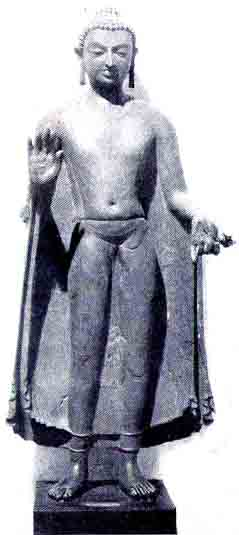
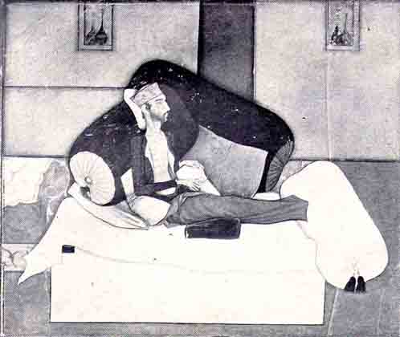

Selected Examples of Indian
Painting and Sculpture
BY O. C. GANGOLY

VII. BUDDHA, THE WANDERING MONK
Colossal Copper Image from Sultanganj, Bengal
Gupta Period (320-600 A.D.)
Collection of Birmingham Museum and Art Gallery
The Beggar Prince who willingly gave away a kingdom on earth to attain a new Kingdom of Heaven, –in the rich salvation of Life from the bondage of the senses, –in due course mounted on His throne of transcendental knowledge (anuttara jnana), became the Lord (Bhagavat) of spiritual riches,–the Buddha, the rich possessor of Bodhi, the supreme knowledge of spiritual destiny. But the Lord did not put on His Crown of Wisdom to tarry long on the throne. He went forth to give away the treasures of His immortality (amrita). A strenuous career (tapasya) to acquire true knowledge was followed by a still harder career to give away to all and sundry, –to the poor in mind, and the needy in true wisdom. The Lord Buddha changed His purple robe of possession for the yellow robe of the monk, the garment of gift and renunciation. His beggar's bowl was a symbol of begging as well as of giving. As Asoka has said: "The greatest of gifts is the gift of the Dhamma". And He went forth to give His message of Dhamma to those who could not come, and the pretext of begging was perhaps an excuse for preaching.
The static pose of tapasya, of samadhi, was soon superceded by the moving figure of the Wandering Monk. And in the Gupta period, the Buddhist worshipper preferred to dedicate an image of the Lord in this moving and entrancing pose of the walking monk, carrying salvation to those who could not, or would not come. It is the story of the Mountain and Mahomet anticipated. The demand for this class of votive images, –proved in a long string of surviving specimens of this type in red sandstone of Mathura,–received its supreme culmination in bronze in the colossus of seven feet in height and a ton in weight, here reproduced from the collection of the Birmingham Gallery.
The Great Monk, the princely bhikshu, stands in a wonderfully-balanced pose of ecstasy and repose, –with one hand clasping the hem of sanghati, and the other, in the pose of reassurance–the gesture of the message of hope–with which He calls out to the laity to come and join His sangha, His community of disciples. The thin diaphanous robe kisses every limb to show off its slender beauty, –its stately dignity, –and its educated equilibrium, free from an atom of superfluous flesh. The harmony of bodily pose answers to a spiritual quiescence. The folds of the garment, afraid to disturb the exquisite equilibrium of the lines, die down into soft and faint curves without hurting the sweet modelling of the frame, and rise to delicate ripples only at the ends, as they hang down the hands in dignified suspense. The face has the expression of an interrupted trance, of One anxious to share His bliss–the taste of the nectar of immortality, –with all His brethren on earth, without discrimination. It has the supreme compassion of One who refused salvation to Himself before every particle of dust had attained Buddha-hood and Nirvana. This theme attains a perfection of plastic form which in its strength, concentration and intensity, puts to shade the colossal Egyptian portraits of the Middle Kingdom, while, in its gracious pose, its nobility of line and its superb Divinity of Form, it chides into meek silence the aggressive anatomy of the Praxitelean Hermes, and only chimes in spiritual harmony with the mystic dreams of the brooding forms on the walls of Chartres and Rheims.

VIII DEATH OF INAYAT KHAN, "THE DYING MAN"
Moghul School, Jahangir Period, circa 1618 A. D.
Ouseley Collection, Bodeleian Library, Oxford
The meticulous realism and the leading inclination of Moghul Painting to depict contemporary scenes and events and personages help us to realise with almost photographic accuracy the atmosphere and environment of the Moghul Courts, and the glorious pageants of their history and their many dramatic episodes, together with a rich gallery of the portraits of individuals, princes and grandees, mansabdars and military commanders, courtiers and camp followers, companions and cup bearers, saints and faqirs, servants and retainers–and a host of other minor persons–who help to make up the rich and crowded tapestry of the pictorial records of Moghul history. Besides a glorious gallery of royal portraits, the Moghul miniaturists have bequeathed to us a number of portraits of humbler personages who took important parts in the numerous dramatic events of one of the glorious epochs of Indian history. We are allowed glimpses of very interesting and illuminating vignettes of these actors in the noble drama of Moghul history drawn by the royal pen in the vivacious pages of the diary of Jahangir, –Tuzuk-i-Jahangiri–and in the somewhat prosaic but more authentic accounts set down in the pages of Maasiru-l-Umara.
Of the numerous striking specimens of the Moghul minor portraits, none is drawn with such wonderful vigour and technique, none is realised with such deep and sympathetic vision, and set down with such intensity of conception as the famous "Dying Man," in one of the Ouseley albums in the Bodeleian Library in Oxford. As usual with important Moghul Portraits, it undoubtedly existed in numerous copies or versions, and a fine drawing of the subject now in the Boston Museum was discovered by Dr. Martin in Cairo. Like so many of similar portraits, the subject of this miniature remained long unidentified until Dr. Coomaraswamy was able to identify the individual immortalized in this fine masterpiece. It represents Inayat Khan, a courtier of the Emperor Jahangir, lying on his death-bed. He was appointed Bakshi of the Ahadis in 1618 and died in the same year as a result of his addiction to drink and opium. Jahangir describes Inayat Khan as one of his "intimate attendants" and he records the last stages of his illness in his Memoirs: "At last he became dropsical and exceedingly low and weak. Some days before this he had petitioned that he might go to Agra. I ordered him to come into my presence and obtain leave. They put him into a palanquin and brought him. He appeared so low and weak that I was astonished. He was skin drawn over bones. Or, rather his bones too had dissolved. Though painters have striven much in drawing an emaciated face, yet I have never seen anything like this, nor even approaching it. Good God! Can a son of man come to such a shape and fashion? As it was a very extraordinary case, I directed painters to take his portrait. . . Next day he traveled the road of non-existence." (Tuzuk-i-Jahangiri, translated by Rogers, A., and Beveridge, H., pages 14, 43). The harrowing and somewhat morbid details of the dying man in his last stage of emaciation given in Jahangir's Memoirs are translated in our illustration with relentless realism, and with wonderful power of delineation, mingled with an obvious feeling of sympathy for the subject which makes it one of the most remarkable pieces of miniature of the Jahangir School. If one sought a parallel in European paintings, one is led to think of Rembrandt's "Anatomy Lesson" which is somewhat more gruesome and forbidding. Here the artist, by his manner of treatment, repels as well as attracts. The "Dying Man," with his skin over bones, sits propped up by numerous pillows, steadfastly looking ahead, expecting and almost welcoming the approach of the Angel of Death, –to come and put an end to his misery. A secular subject is almost uplifted to the level of the gravity and intensity of a religious theme.